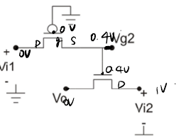

定性论述 · 第 2 章 · 依据已有定性题整理
本题涉及的概念
单MOS传输的阈值损失
单导通路径传递电平时，其源电压变化会削弱栅源控制。栅接 的传强、弱，高电平约止于 ；栅接的传强、弱，低电平约止于 。
定性论述题
为什么pMOS传输管能够传递“强”，却只能传递“弱”？
查看关联原题图表

参考答案与评分要点
考试作答
栅接时，传递高电平的高电位端作为源，源栅电压足以保持开启，可把负载充到接近 ，称强。传低时较高电位的输出端逐渐下降， 随之减小，约到 时到达阈值边界，不能继续强下拉，称弱。相反传强、弱。体效应会进一步改变阈值和极限电平。
评分要点
- 正确源端和栅连接
- 强过程
- 弱阈值边界
- 指出体效应及型对照
为什么这样回答
输出自己成为决定栅源控制的端点，所以传输的目标电平会反过来改变器件是否还能导通。
出处与回查
PPT/chapter2-device01-MOS-DC chara_20260915.pdf· PDF 第 49 页PPT/chapter2-device02-dynamic_20260920.pdf· PDF 第 5 页
关联题目：